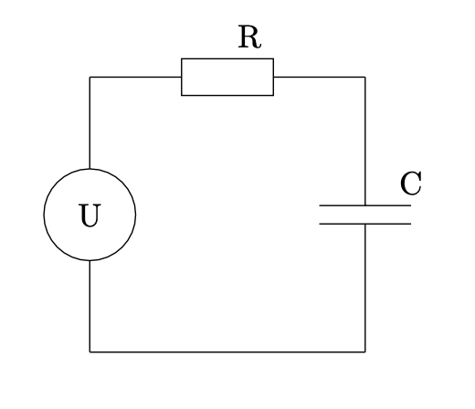

17.4. Coding the Implicit Euler method#
In every time-step we have to solve for the new value \(y^{n+1}\):
The function \(f : {\mathbb R}^n \rightarrow {\mathbb R}^n\) is the right hand side of the ODE, which has been brought into autonomous form.
We use our function algebra to build this composed function, and throw it into the Newton solver. If we make the time-step not too large, the value \(y^n\) of the old time-step is a good starting value.
To express that the independent varible is \(y^{n+1}\), we create an IdentityFunction. The old
value is considered as a constant, i.e. a ConstantFunction. The right hand side function is
given by the user. Then the implicit Euler method is coded up like that:
void SolveODE_IE(double tend, int steps,
VectorView<double> y, shared_ptr<NonlinearFunction> rhs,
std::function<void(double,VectorView<double>)> callback = nullptr)
{
double dt = tend/steps;
auto yold = make_shared<ConstantFunction>(y);
auto ynew = make_shared<IdentityFunction>(y.Size());
auto equ = ynew - yold - dt * rhs;
double t = 0;
for (int i = 0; i < steps; i++)
{
NewtonSolver (equ, y);
yold->Set(y);
t += dt;
if (callback) callback(t, y);
}
}
17.4.1. Excercises#
Implement an explicit Euler time-stepper, and the Crank-Nicolson method.
Compare the results of the mass-spring system for these methods, and various time-steps. Plot the solution function. What do you observe ?
Model an electric network by an ODE. Bring it to autonomous form. Solve the ODE numerically for various parameters with the three methods, and various time-steps.
{kind=link}

Voltage source \(U_0(t) = \cos(100 \pi t)\), \(R = C = 1\) or \(R = 100, C = 10^{-6}\).
Ohm’s law for a resistor \(R\) with resistivity \(R\):
Equation for a capacitor \(C\) with capacity \(C\):
Kirchhoff’s laws:
Currents in a node sum up to zero. Thus we have a constant current along the loop.
Voltages around a loop sum up to zero. This gives:
\[ U_0 = U_R + U_C \]
Together:
Use initial condition for voltage at capacitor \(U_C(t_0) = 0\), for \(t_0=0\).
17.4.2. Stability function#
An ODE \(y^\prime(t) = A y(t)\) with \(A \in {\mathbb R}^n\) diagonizable can be brought to \(n\) scalar ODEs
where \(\lambda_i\) are eigenvalues of \(A\). If \(\lambda_i\) has negative (non-positive) real part, the solution is decaying (non-increasing). Skip index \(i\).
The explicit Euler method with time-step \(h\) leads to
the implicit Euler method to
and the Crank-Nicolson to
The stability function \(g(\cdot)\) of a method is defined such that
These are for the explicit Euler, the implicit Euler, and the Crank-Nicolson:
The domain of stability is
What is
If Re\((\lambda) \leq 0\), then \(h \lambda\) is always in the domain of stability of the implicit Euler, and of the Crank-Nicolson. This property of an method is called \(A\)-stability. The explicit Euler leads to (quickly) increasing numerical solutions if \(h\) is not small enough.
If \(\lim_{z \rightarrow -\infty} g(z) = 0\), quickly decaying solutions lead to quickly decaying numerical solutions. This is the case for the implicit Euler, but not for the Crank-Nicolson. This property is called \(L\)-stability. One observes (slowly decreasing) oscillations with the CR - method when \(-h \lambda\) is large.